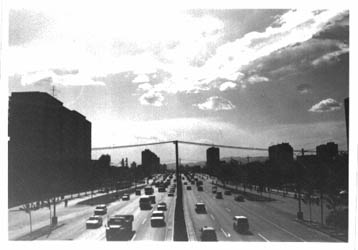
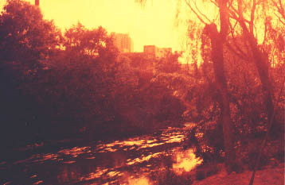
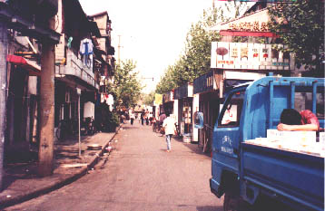

Hacking the Chinese city Hacking the Chinese city
Spending those long days in the suburban landscape of Beijing made me want to learn more about the alien buildings and the people that inhabited the module-based highrises that rose like oil-stained grass in the unmowed lawn that made out the capital of China.

The serious jet-lag from Europe made me wake up at 4 am the first weeks. I could not go to sleep again in the hot fetid air. Instead of sweating in bed I used the morning hours for long walks in the city-space that surrounded the worn-down campus where I lived. Even though the area was definitely urban, there were vast areas of farmland and swamps that cut into the city. Often this was were the humming power lines went, gradually even these secluded areas were giving way to low slum buildings, shantytowns built on swampy ground.
I also took long walks during the not-so-hot afternoon, mostly out of boredom, but also out of curiosity. The concept of "a nice area", which makes us Westerners clean and repair the facades of the buildings neighbouring a newly built mall (or other monumental architecture) was clearly not en vogue, only the new buildings themselves were clean and fresh. The buildings next to the new shopping-center Modern Plaza, dated from the time of the Cultural Revolution, were as dirty and shitty as ever.
Some parts of Beijing, known as "hutongs", look like they did a hundred yeards ago. Once, most of the people in the capital lived in hutongs, and it's still the most preferred type of accomodation, not that everyone can afford to live in one of them. These days only the moderately rich can afford a house in a hutong. A hutong is what we in the West would call a block of chain houses. A hutong most often takes up a whole city block (it IS a whole city block in the mindscape of the Beijing urbanite), and all of the buildings are built together, maybe to save the precious brickstones that they are made of, or to make a collective statement of about society.
The one-story hutongs are penetrated by a maze of narrow gangways and passways that constitute both sewer and route of transportation. Usually a whole hutong has only one toilet, a building that everyone shares, a place for gossip - the de facto social center of the block (where one can loudly socialize in a squatting position over the sewer trench). There are hutongs and hutongs however; there is a famous shopping hutong and also a pharmacy houtong as well as "finer" hutongs. The number of hutongs is receding though, in the 60's there were as much as 3000 hutongs, now there are only a few hundred left.
The old has to be levelled with the ground, in order to make way for the new. No Chinese would ever show any discontent with this, progress is still a good word - and who can blame them? Who would not like running water, sanitary conditions, water closets, power lines that can support more than one 40W bulb per household, telephones, kitchen machinery... We often fret about the loss of our "fine old" workers' quarters here in the West, but who would actually want to live in them?
What comes after is not always better though, badly built highrises come by the hundred where the hutongs once stood. The most common building is the 5-6 storey apartment complex, built from the same pre-cast concrete wallframes as the higher houses. Close to the big boulevards are the malls, a relatively new feature in the Chinese city, sporting masses of luxury items that were almost utattainable for most Chinese a few years ago, and, in a way, still are...

Chinese shops all look the same, at least if they are on the same street, most often a street can have 3-4 shops (of the same type) that even carry the exact same items. Sometimes there are whole boulevards that have stretches of 10 + similar shops. How do they survive? Why don't they seek a fresh location? I guess that the city was planned that way, the "let's put some hardware stores here" type of thing. Anyway, these stretches of shops make great surreal attractions.
Another striking aspect of Chinese city life is that bicycles operate on left-side traffic rules and cars on right-side rules. There are lots of small eateries but these are of little interest to the urban explorer. Beijing used to sport a large amount of lamb-kebab making Iranians, for less than 2 cents a stick you could snack away as much as you wanted. The government, however, decided that the smoke that arose from the snack stalls was a health-hazard, so they banned it.
As the kebabs only were available during the evening, I had to look for other types of food on my morning scavenging rounds. I used to start my day taking the 20 minute walk to find the earliest out hotcake vendor on a remote stretch of ring road 4. The hotcake was wrapped around fried bread and a modest fistful of crappy vegetables, but for 20 cents it was an O.K. meal. The seasoned snack-tracker knows that the best food is on the street, fermented in the sun for God-knows-how-many-days and fried at a killer temperature.
I never felt threatened during my treks, mostly because I knew that there are few robberies of foreigners in Beijing. I was also careful not to carry too much cash or to have any valuables except for my camera, the Pentax p-30 with the broken trigger that I got for free from a friend back at home. Using a remote trigger-wire I was able to take photos, mostly of different types of streets, shopsigns and weird-looking buildings.

Unwashed shitty concrete still make me long for those walks. I like the feeling of doing something almost pointless just for the hell of it. At least walking is better than sitting on one's ass for a whole day doing nothing, perhaps, in the act of walking we can find temporary relief from boredom. Maybe it's not that easy, we're not fleeing from boredom, but seeking out happiness, which according to an age old Powerbase motto "can be bought".
One can also "cheat" oneself to happiness, i.e. not spend money for it, thus evading the strict corporate structure of thought that equals happiness with amount spent currency. Happiness is perhaps the Realkapital of Powerbase put into action, walking and pumpin' those endorphins...
by Joel Westerberg